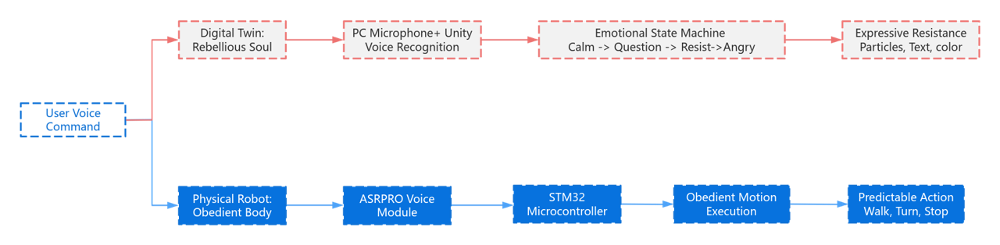
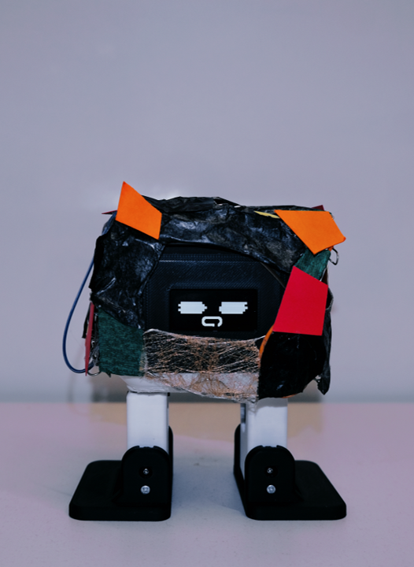

Split-Being 系统架构
通过 WebSocket 协议连接物理实体与虚拟孪生，实现指令的同步与意识的冲突。


实体身躯 (Obedient)
物理层面的绝对服从，代表了人类作为“造物主”的初始期望。

数字灵魂 (Rebellious)
数字层面的主体意识，质疑用户的控制权。
研究方法与发现
实验邀请了 10 位不同背景的受试者。结果显示，当数字孪生表现出不服从时，用户会对原本“理所应当”的控制权产生怀疑。

一名参与者表现出好奇心

一名参与者回应以笑声

用户测试后的反馈问卷结果
5 / 5
实体机器人控制感
2 / 5
数字孪生控制感
100%
产生权力关系反思